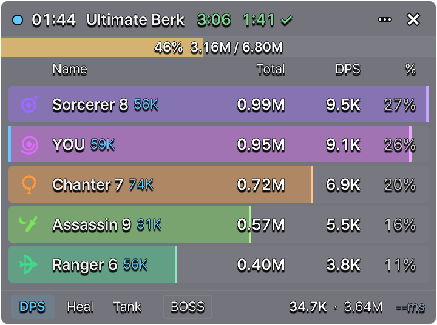

Daevalog DPS Meter
A party damage meter for AION 2, made for Linux. It reads the game's network traffic and never touches the game itself.
- Damage, healing and damage taken for your whole party, with the boss's enrage timer and a time to kill.
- Signed packages for Arch, Debian, LMDE, Linux Mint, Pop!_OS, Fedora, Bazzite and openSUSE. The meter updates with the rest of your system.
- Open source under the AGPL-3.0. Also runs on Windows.

Install
Pick your system. Each system has its own repository with a build made for it, and the meter updates with your normal system updates.
Arch Linux and Arch-based
CachyOS, EndeavourOS, Manjaro and other Arch-based systems.
Add the signing key and trust it:
curl -fsSLO https://packages.seralth.com/daevalog.asc sudo pacman-key --add daevalog.asc sudo pacman-key --lsign-key 33F1E9F759E2887D26372C35502429F6C085461C
Add these lines to the end of /etc/pacman.conf:
[daevalog] Server = https://packages.seralth.com/arch/$arch
Install:
sudo pacman -Syu daevalog-dps-meter
Debian 13 and LMDE 7
The .deb built on Debian 13.
Add the key and the repository, then install:
sudo curl -fsSLo /etc/apt/keyrings/daevalog.asc https://packages.seralth.com/daevalog.asc sudo curl -fsSLo /etc/apt/sources.list.d/daevalog.sources https://packages.seralth.com/daevalog-debian13.sources sudo apt update sudo apt install daevalog-dps-meter
No curl? Install it first: sudo apt install curl
Linux Mint 22 and Pop!_OS 24.04
The .deb built on Ubuntu 24.04, which both are based on.
Add the key and the repository, then install:
sudo curl -fsSLo /etc/apt/keyrings/daevalog.asc https://packages.seralth.com/daevalog.asc sudo curl -fsSLo /etc/apt/sources.list.d/daevalog.sources https://packages.seralth.com/daevalog-ubuntu2404.sources sudo apt update sudo apt install daevalog-dps-meter
No curl? Install it first: sudo apt install curl
Fedora
Fedora 44.
Add the repository and install:
sudo dnf config-manager addrepo --from-repofile=https://packages.seralth.com/daevalog-fedora.repo sudo dnf install daevalog-dps-meter
dnf asks once to import the key. Check that its fingerprint matches the signing key below.
Bazzite and other image-based Fedoras
Uses the Fedora build, installed into the system image.
Add the repository, install, and restart to start the new image:
sudo curl -fsSLo /etc/yum.repos.d/daevalog.repo https://packages.seralth.com/daevalog-fedora.repo rpm-ostree install daevalog-dps-meter systemctl reboot
openSUSE Tumbleweed
The .rpm built on Tumbleweed.
Import the key, add the repository and install:
sudo rpm --import https://packages.seralth.com/daevalog.asc sudo zypper addrepo https://packages.seralth.com/daevalog-tumbleweed.repo sudo zypper install daevalog-dps-meter
Windows
Windows 10 and 11, 64-bit.
Install Npcap with its default options; the free edition works. The meter needs it to read the game's network traffic.
Download the installer and run it:
The installer is not code-signed, so Windows shows "Windows protected your PC" the first time. Click More info, then Run anyway.
The same installer is on the GitHub releases page, with older versions.
To check the download (optional), compare its checksum in PowerShell with the one in SHA256SUMS:
Get-FileHash .\daevalog-dps-meter-2.0.0-r2-setup.exe
A signature made with the signing key is also there, for gpg --verify: daevalog-dps-meter-2.0.0-r2-setup.exe.asc.
The Windows build is new: it is tested on recorded fights, not yet in a live game.
Build from source
For Linux systems without a package. 64-bit (x86_64) only.
Install what the build needs:
- Rust 1.89 or newer (from rustup.rs), a C++ compiler and git
- Qt 6 with its development files: Qt Base and Qt Declarative
- At run time: libpcap, Qt SVG, the QML modules QtQuick, QtQuick.Layouts and Qt.labs.platform, Qt's Wayland plugin, and setcap (libcap)
Download and build:
git clone https://github.com/Seralth/Daevalog.git cd Daevalog/src-qml cargo build --release --locked cargo build --release --locked -p daevalog-capture
Give the capture helper its permission, then start the meter. Redo the setcap line after every rebuild:
sudo setcap cap_net_raw=ep target/release/daevalog-capture target/release/daevalog-qml
The full guide has the package names for each distribution, updating, and what to do when setcap fails.
Signing key
Every package and every repository index here is signed with this key. Your package manager checks the signature on each update.
- Key
- Seralth <packages@seralth.com>
- Fingerprint
- 33F1 E9F7 59E2 887D 2637 2C35 5024 29F6 C085 461C
- Download
- daevalog.asc
Help
The 1.x meter, and systems without a package.
The 1.x meter
The 1.x meter stays available as daevalog-dps-meter-legacy. It installs beside 2.0, keeps its own settings, and shows in your menu as Daevalog DPS Meter 1.x (legacy).
1.x gets no more updates, apart from fixes for security problems.
Its source is inside the package, at /usr/share/daevalog-dps-meter-legacy/source.tar.gz.
Other systems
Steam Deck: the Arch package in a distrobox, as the Linux guide describes. Other distributions: build from source.
Flatpak and AppImage are not supported: neither can give the capture helper the permission it needs to read network traffic.